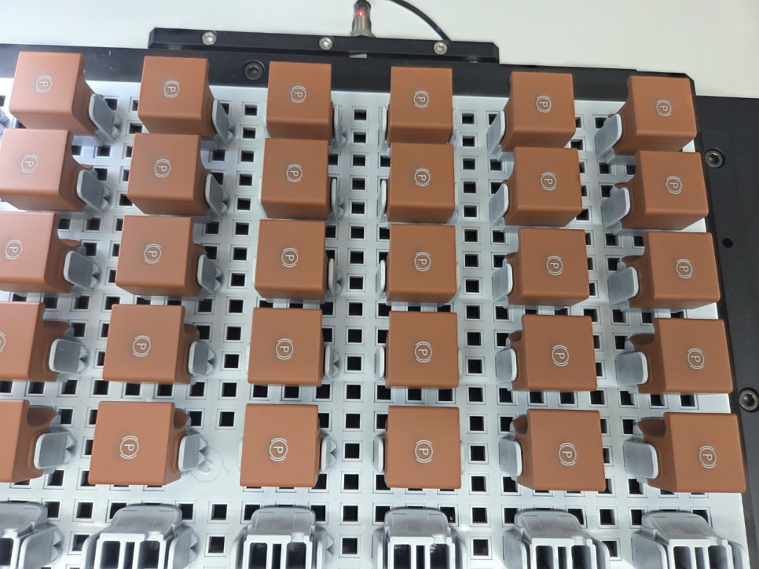

자동차 · 조작 버튼 · 얼라인먼트
자동차 버튼 레이저 마킹·위치보정 검사 시스템 사례
Cognex · 카메라 2대 · 전용 UI
트레이당 약 30~100개 버튼의 위치를 보정해 레이저 마킹하고, 별도 카메라로 마킹 상태를 검사한 사례입니다. 바코드 기반 레시피 전환과 MES·라벨프린터 연동을 구성했습니다.

Project Summary
프로젝트 핵심 구성
- 산업
- 자동차 · 조작 버튼
- 검사·자동화 대상
- 자동차 버튼 레이저 마킹·위치보정 검사
- 주요 기술
- Cognex · 카메라 2대 · 전용 UI
- 적용 구분
- 프로젝트 사례
01 · Overview
프로젝트 개요
트레이당 약 30~100개 버튼의 위치를 보정해 레이저 마킹하고, 별도 카메라로 마킹 상태를 검사한 사례입니다. 바코드 기반 레시피 전환과 MES·라벨프린터 연동을 구성했습니다.
02 · Problem
프로젝트에서 해결해야 했던 문제
검은 제품·배경의 낮은 대비 / 다품종 레시피 선택 / 트레이별 불량 위치 표시 조건에 대응해야 했습니다.
- 검은 제품·배경의 낮은 대비
- 다품종 레시피 선택
- 트레이별 불량 위치 표시
03 · System
검사·자동화 시스템 구성
트레이당 약 30~100개 버튼의 위치를 보정해 레이저 마킹하고, 별도 카메라로 마킹 상태를 검사한 사례입니다. 바코드 기반 레시피 전환과 MES·라벨프린터 연동을 구성했습니다.
레시피 전환
위치보정·마킹
비전검사
MES·라벨 출력
04 · Inspection
프로젝트 배경
자동차에는 창문 스위치, 에어컨 버튼, 열선 버튼 등 수많은 버튼이 사용됩니다.
이러한 버튼에는 기능을 표시하기 위한 레이저 마킹 공정이 반드시 필요하며, 마킹 위치와 품질은 제품의 외관과 직결되기 때문에 매우 중요한 검사 항목입니다.
이번 프로젝트는 기존 수작업으로 진행하던 자동차 버튼 레이저 마킹 공정을 머신비전 시스템으로 자동화한 구축 사례입니다.
고객의 고민
05 · Inspection
기존 생산라인에서는 작업자가 지그 위에 자동차 버튼을 3~4개씩 올려놓고 레이저 마킹을 진행했습니다.
레이저 마킹이 완료되면 작업자가 다시 눈으로 직접 확인하여 정상 여부를 판단했습니다.
이러한 방식은 여러 가지 문제를 가지고 있었습니다.
작업자가 계속 제품을 올려야 하는 반복 작업
마킹 완료 후 육안 검사에 따른 휴먼에러
생산 속도의 한계
작업자 숙련도에 따라 품질 편차 발생
검사 이력 관리의 어려움
생산량이 증가할수록 이러한 문제는 더욱 크게 나타났습니다.
ASPEC의 해결 방법
06 · Inspection
ASPEC은 기존 공정을 완전히 자동화하는 머신비전 시스템을 구축하였습니다.
기존처럼 제품을 몇 개씩 검사하는 것이 아니라,
한 개의 트레이에 약 30~100개의 자동차 버튼을 동시에 적재할 수 있도록 설비를 구성하였습니다.
비전 시스템은 두 대의 카메라를 사용합니다.
① Align 카메라
첫 번째 카메라는 제품의 실제 위치를 찾는 역할을 수행합니다.
트레이에 제품이 조금씩 다르게 놓이더라도 머신비전이 각 버튼의 위치를 정확하게 계산하여 레이저 마킹기에 좌표를 전송합니다.
이를 통해 레이저는 항상 동일한 위치에 정확하게 마킹할 수 있습니다.
07 · Inspection
② 마킹 검사 카메라
레이저 마킹이 완료되면 두 번째 카메라가 모든 버튼을 검사합니다.
마킹 누락
위치 이상
인쇄 불량
등을 자동으로 판별하여 작업자의 육안 검사를 완전히 대체하였습니다.
검은색 제품도 안정적으로 검사
08 · Inspection
이번 프로젝트에서 가장 어려웠던 부분 중 하나는
제품과 배경 모두 검은색 계열이라는 점이었습니다.
일반적인 조명에서는 제품의 외곽이 거의 보이지 않아 위치를 찾기 어려운 제품들이 많았습니다.
ASPEC은 제품 특성에 맞는 조명을 선정하고 이미지 전처리 알고리즘을 적용하여
외곽이 잘 보이지 않는 제품도 안정적으로 위치를 검출할 수 있도록 구현하였습니다.
머신비전에서는 카메라보다 조명과 광학 설계가 더 중요한 이유를 보여주는 대표적인 사례였습니다.
작업자가 바로 이해할 수 있는 UI 개발
09 · Inspection
자동차 버튼은 수십 개에서 많게는 100개 이상이 동시에 검사됩니다.
불량이 발생했을 때
작업자가 어느 위치에서 문제가 발생했는지 즉시 확인할 수 있어야 했습니다.
ASPEC은 실제 트레이와 동일한 형태의 UI를 개발하여
검사 결과를 실제 제품 배치와 동일하게 표시하도록 구현하였습니다.
작업자는 화면만 확인해도
어느 위치의 버튼에서 불량이 발생했는지 즉시 확인할 수 있으며,
불량 제품만 빠르게 교체할 수 있습니다.
단순한 검사 프로그램이 아니라 작업자의 편의성까지 고려한 사용자 인터페이스를 구축하였습니다.
10 · Inspection
수백 개의 레시피도 자동 변경
자동차 버튼은 차종과 옵션에 따라 제품 종류가 매우 많습니다.
기존에는 작업자가 제품이 변경될 때마다 직접 레시피를 선택해야 했습니다.
잘못된 레시피를 선택하면 다른 위치에 레이저 마킹이 이루어질 수 있기 때문에 작업자의 실수가 발생할 가능성이 있었습니다.
ASPEC은 산업용 바코드 핸드리더기를 적용하여 MES에서 출력한 작업지시서의
제품 바코드만 스캔하면 해당 레시피가 자동으로 변경되도록 구현하였습니다.
수백 개 이상의 레시피도 작업자의 개입 없이 자동으로 변경되므로
생산성과 신뢰성을 동시에 확보할 수 있었습니다.
스마트카메라만으로는 부족한 부분까지 개발
11 · Inspection
스마트카메라는 검사 기능은 우수하지만
현장에서 필요한 모든 기능을 제공하지는 않습니다.
이번 프로젝트에서는
검사 로그 저장
생산 이력 관리
사용자 인터페이스(UI)
작업 이력 확인
결과 화면 표시
등 현장에서 요구하는 다양한 기능을 별도의 프로그램으로 개발하여 함께 적용하였습니다.
실제 생산라인에서 장기간 안정적으로 사용할 수 있도록 시스템 전체를 구성하였습니다.
12 · Inspection
MES 및 라벨프린터 자동 연동 인쇄
이번 프로젝트에서는 단순히 레이저 마킹과 비전검사만 자동화한 것이 아닙니다.
검사가 완료된 제품은 MES와 연동하여 생산 정보를 자동으로 관리하고, 다음 공정에서 사용할 라벨까지 자동으로 출력하도록 시스템을 구축하였습니다.
비전검사와 레이저 마킹이 모두 정상적으로 완료되면 시스템은 다음과 같은 정보를 자동으로 생성합니다.
MES에서 수신한 제품명
현재까지의 정상 생산 수량
생산 이력 정보
제품 사진
다음 공정에서 필요한 작업 정보
이 정보를 하나의 라벨로 자동 출력하여 제품과 함께 관리할 수 있도록 구현하였습니다.
작업자는 별도의 입력 없이 자동으로 출력된 라벨만 부착하면 되므로 입력 실수를 방지할 수 있으며, 생산 이력 또한 체계적으로 관리할 수 있습니다.
특히 제품 사진까지 함께 출력되도록 구성하여 작업자가 육안으로도 제품을 쉽게 확인할 수 있도록 하였으며, 다음 공정에서도 제품 확인 시간을 크게 단축할 수 있었습니다.
13 · Inspection
구축 효과
이번 프로젝트를 통해 고객사는 다양한 효과를 얻을 수 있었습니다.
✔ 작업자의 육안 검사 제거
✔ 레이저 마킹 품질 향상
✔ 작업자 휴먼에러 제거
✔ 생산 속도 향상
✔ 작업자 2명이 수행하던 작업을 자동화 시스템 1대로 운영
✔ 제품 위치 자동 보정(Align)
✔ 레시피 자동 변경
✔ MES 연동을 통한 생산 이력 관리
✔ 제품 사진이 포함된 라벨 자동 출력
✔ 바코드 기반 자동 생산 관리
✔ 불량 위치 즉시 확인
✔ 유지보수 편의성 향상
14 · Inspection
ASPEC이 생각하는 머신비전
많은 분들이 머신비전은 카메라만 설치하면 되는 기술이라고 생각합니다.
하지만 실제 현장에서는
조명,
광학 설계,
이미지 전처리,
검사 알고리즘,
UI 개발,
생산 이력 관리,
PLC 및 레이저 장비 연동까지 모두 함께 고려해야 비로소 안정적인 시스템이 완성됩니다.
이번 프로젝트 역시 단순히 버튼의 위치를 찾는 것이 아니라,
생산성 향상, 작업자 편의성, 유지보수, 품질 관리까지 모두 고려하여 구축한 머신비전 자동화 시스템입니다.
ASPEC은 고객의 생산 환경에 맞는 최적의 머신비전 솔루션을 지속적으로 제공하겠습니다.
감사합니다.
Project Videos
실제 검사·자동화 영상
Operation
현장 적용과 운영 조건
트레이당 약 30~100개 버튼의 위치를 보정해 레이저 마킹하고, 별도 카메라로 마킹 상태를 검사한 사례입니다. 바코드 기반 레시피 전환과 MES·라벨프린터 연동을 구성했습니다.
- 검은 제품·배경의 낮은 대비
- 다품종 레시피 선택
- 트레이별 불량 위치 표시
Result
적용 효과
- 작업자의 육안 검사 제거
- 레이저 마킹 품질 향상
- 작업자 휴먼에러 제거
- 생산 속도 향상
- 작업자 2명이 수행하던 작업을 자동화 시스템 1대로 운영
- 제품 위치 자동 보정(Align)
- 레시피 자동 변경
- MES 연동을 통한 생산 이력 관리
- 제품 사진이 포함된 라벨 자동 출력
- 바코드 기반 자동 생산 관리
- 불량 위치 즉시 확인
- 유지보수 편의성 향상
Engineering
ASPEC의 머신비전 시스템 설계 방식
검사 대상의 재질과 형상, 설치 공간과 생산 조건에 맞춰 장비·광학·소프트웨어와 설비 연동을 함께 검토합니다.
- 검은 제품·배경의 낮은 대비
- 다품종 레시피 선택
- 트레이별 불량 위치 표시
08 · Related Cases
관련 구축사례
비슷한 공정의 자동화를 검토하고 계신가요?
검사 대상과 불량 샘플, 설치 공간, 택타임을 알려주시면 적용 구성을 검토해 드립니다.